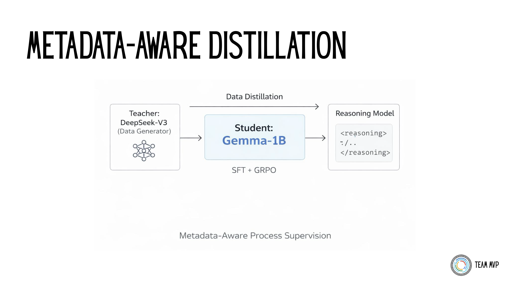
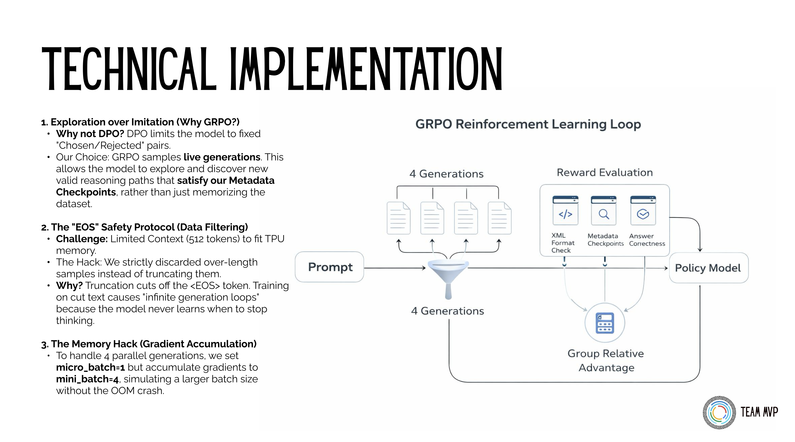

Thinking in Tokens: Distilling Chain-of-Thought
How I fine-tuned Gemma-3-1B to explicitly structure reasoning traces using GRPO on a single Kaggle TPU.
The Engineering Problem
Large models reason naturally. Small models usually just blurt out an answer. My goal for the Google Tunix Hackathon was to train a small 1B parameter model (Gemma-3-1B-IT) to explicitly generate structured reasoning traces (<reasoning>...</reasoning>) before arriving at a final answer.
I achieved this by combining Teacher-Student Data Distillation with Group Relative Policy Optimization (GRPO), heavily constrained by the 9-hour TPU v5e session limit on Kaggle.
Data Strategy: Metadata as a Grading Rubric
To train the model, I used DeepSeek-V3 as a "teacher" to generate a synthetic dataset across Math, Code, and Science. But I didn't just ask the teacher for text. I explicitly prompted it to output hidden checkpoints in the metadata alongside the answer.
Here is an example of what the distilled training data looked like. Notice how the metadata turns the dataset into a self-grading rubric for Process Supervision:

The Teacher-Student distillation pipeline using DeepSeek-V3 to generate self-grading metadata checkpoints.
{
"domain": "math",
"prompt": "A store sells apples for $2 and oranges for $3. If I buy 4 apples and 3 oranges, and pay with a $20 bill, how much change do I get?",
"chosen": "<reasoning>1. Calculate cost of apples: 4 * $2 = $8...</reasoning><answer>$3</answer>",
"metadata": {
"checkpoints": ["4 * 2 = 8", "3 * 3 = 9", "8 + 9 = 17", "20 - 17"],
"final_answer": "3"
}
}To optimize for TPU throughput, I strictly filtered every sample to fit within 256 input tokens and 512 output tokens. This fixed shape prevented memory fragmentation from padding and allowed me to maximize batch sizes.
The Training Pipeline
I used a two-stage approach to align the model.
Stage 1: Supervised Fine-Tuning (SFT)
Before doing any reinforcement learning, I ran 500 steps of SFT. The goal here wasn't to teach logic; it was just to teach syntax. I needed the model to consistently output the correct XML tags. Skipping this step usually causes the RL agent to waste time exploring bad formats, leading to reward collapse.
Stage 2: GRPO Alignment
Instead of using PPO (which requires a memory-heavy Critic model), I used GRPO. The model generates 4 different answers for the same prompt, and we score them against each other using a 3-pillar reward system:
- Format Reward: Strictly enforces the XML schema (
<reasoning>and<answer>tags). - Process Reward: Uses the metadata checkpoints to give partial credit for hitting logical milestones, even if the final answer is wrong.
- Outcome Reward: Validates the final result against the ground truth.
Below is the actual Python implementation for the Process Reward, which parses the generated text and scores it based on how many metadata checkpoints it hit:

The Group Relative Policy Optimization (GRPO) loop evaluating 4 parallel generations against the 3-pillar reward system.
def reward_math_checkpoints(prompts, completions, **kwargs):
metadata_json_batch = kwargs.get("metadata_json", [])
rewards = []
for i, text in enumerate(completions):
if i >= len(metadata_json_batch):
rewards.append(0.0); continue
try: meta = json.loads(metadata_json_batch[i])
except: meta = {}
checkpoints = meta.get("checkpoints", [])
if not checkpoints:
rewards.append(0.0); continue
# Extract the reasoning block
reasoning_match = re.search(r"<reasoning>(.*?)</reasoning>", text, re.DOTALL)
if not reasoning_match:
rewards.append(0.0); continue
# Reward the model for hitting intermediate logical steps
content = reasoning_match.group(1)
hits = sum(1 for cp in checkpoints if str(cp) in content)
rewards.append(hits * 0.2)
return rewardsThe Sparse Reward Trap: One major issue with training reasoning models is "sparse rewards"—if the model never accidentally guesses the right answer during exploration, it gets a reward of 0 and learns nothing. To fix this, I adapted elements of the MPO (Mixed Preference Optimization) framework. By blending a format reward (did it use the XML tags?) with the mathematical process reward, the model received partial credit for formatting correctly, guiding it toward the correct logic paths even when the final answer was wrong.
Fitting the Hardware Constraints
Running a training loop with 4 parallel generations on a single Kaggle TPU v5e is tight. To prevent Out of Memory (OOM) errors, I used LoRA (Rank 32, Alpha 16) instead of full fine-tuning. I also engineered a memory-efficient loop using Tunix's gradient accumulation features (micro_batch=1, mini_batch=4) to simulate larger batch sizes without crashing the instance.
The "EOS" Safety Protocol: To fit the strict 512-token output limit in TPU memory, I had to filter the dataset. The standard approach is to simply truncate long responses. However, truncating cuts off the <EOS> (End of Sequence) token. If you train a model on truncated text, it never learns when to stop thinking, leading to catastrophic "infinite generation loops" during inference. My hack was to strictly discard over-length samples entirely rather than truncating them, preserving the structural integrity of the EOS token across the entire dataset.
The Results
The training logs proved the concept. During SFT, the model converged on the XML format. During GRPO, the process reward metric showed steady improvement. Running an evaluation across 849 unseen samples yielded a 91.0% Full Format Accuracy.
Here is an actual inference output from the final merged 1B model. It successfully breaks down concepts into explicit, step-by-step traces before jumping to a conclusion, a behavior entirely absent in the base model:
Prompt: Explain why the sky is blue using simple physics.
Result:
<reasoning>
The sky appears blue because of a phenomenon called Rayleigh scattering. Sunlight is made up of all the colors of the rainbow. When sunlight enters the Earth's atmosphere, it collides with tiny air molecules (mostly nitrogen and oxygen). Shorter wavelengths (blue and violet) are scattered much more strongly than longer wavelengths (red and orange). Because blue light is scattered so much, it's dispersed all over the sky, making it look blue to our eyes.
</reasoning>
<answer>
The sky appears blue because of Rayleigh scattering. Sunlight is composed of all colors. When sunlight enters the atmosphere, it collides with air molecules. Shorter wavelengths (blue and violet) are scattered much more effectively than longer wavelengths, dispersing blue light in all directions.
</answer>